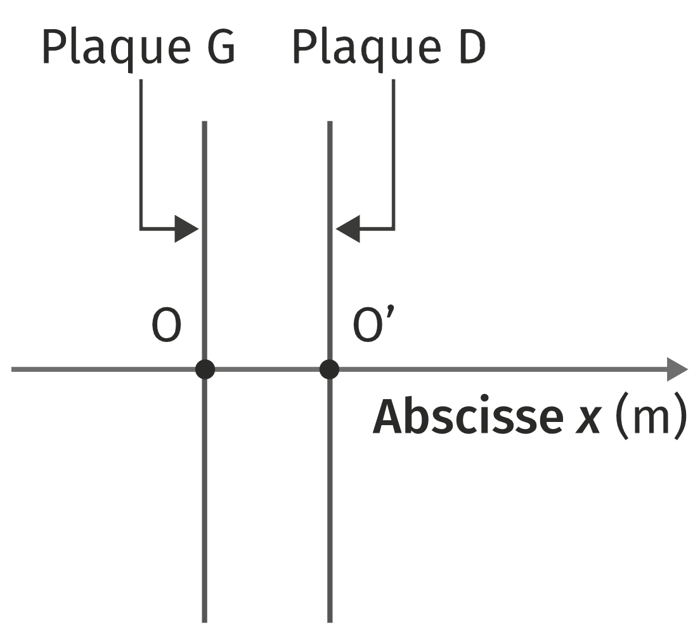

La tomographie par émission de positons (TEP) est un examen reposant sur la détection de positons. Ils sont émis par le $\ce{^{18}F-FDG}$, que l’on injecte au patient et qui doit être produit à l’hôpital. Pour cela, on bombarde au moyen d’un cyclotron des noyaux d’oxygène 18 par des protons dont l’énergie cinétique est de $\pu{16 MeV}$. Les protons placés au point $O$ sont accélérés jusqu’au point $O’$ où ils pénètrent dans le dé $D$.
À $t=\pu{0 s}$, un proton est introduit dans le cyclotron au point $O$ sans vitesse initiale. La tension accélératrice $U$ vaut $\pu{30 kV}$. On se place sur l’axe $(Ox)$ horizontal, centré sur $O$ et dirigé vers la droite.
Données.
- Masse du proton : $m_p = \pu{1,67e−27 kg}$ ;
- Charge électrique du proton : $e = \pu{1,60e−19 C}$ ;
- Conversion d’unité : $1 eV = \pu{1,60e−19 J}$ ;
- Intensité de pesanteur : $g = \pu{9,81 N·kg-1}$ ;
- Distance entre les plaques $D$ et $G$ : $d = \pu{2,00 mm}$.
Le cyclotron est un appareil constitué de deux demi-cylindres creux appelés dees. Entre les plaques $G$ et $D$ règne un champ électrique $\vec{E}$ uniforme, perpendiculaire à ces plaques.
On fait l’hypothèse que le proton n’est pas relativiste et on admettra que son poids est négligeable devant la force électrique.
Les protons placés au point $O$ sont accélérés jusqu’au point $O’$ où ils pénètrent dans le dee $D$.
L’objectif de cette partie est d’étudier le fonctionnement du cyclotron.

À $t = 0$, un proton est introduit dans le cyclotron au point $O$ sans vitesse initiale. La tension accélératrice vaut $\pu{30 kV}$. On se place sur l’axe $(Ox)$ horizontal, centré sur $O$ et dirigé vers la droite.
-
Sachant que le proton doit être accéléré, compléter le schéma de L’ANNEXE À RENDRE AVEC LA COPIE en y faisant figurer, sans souci d’échelle :
-
le vecteur $\vec{F}$ modélisant la force électrique exercée sur le proton entre $O$ et $O’$ ;
-
un vecteur champ électrique $\vec{E}$ entre les plaques $D$ et $G$.
Justifier chacune des réponses.
-
-
Établir l’expression du vecteur accélération $\vec{a}$ du proton entre $O$ et $O’$ en fonction de $\vec{E}$.
-
Montrer que l’abscisse $x$ du proton sur son trajet $OO’$ est donnée par la relation $$ x(t) = \dfrac{e \vert U \vert}{2 m_p d}\, t^2 $$
-
En déduire la valeur de la durée $\Delta t_1$ mise par le proton pour aller de $O$ à $O’$.
Dans le dee $D$, le proton, soumis à un champ magnétique uniforme d’intensité $B = \pu{1,6 T}$, a un mouvement circulaire jusqu’au point $A’$. Lorsque le proton arrive au point $A’$, le sens du champ électrique $\vec{E}$ est inversé. Le proton subit alors une nouvelle accélération jusqu’au point $A$.
Le processus d’accélération et de demi-tour successifs se répète un grand nombre de fois jusqu’à ce que le proton sorte de l’accélérateur avec la vitesse souhaitée pour bombarder la cible.
Une dizaine de microsecondes est nécessaire pour atteindre une telle vitesse.
Dans chaque dé, la force résultant de l’interaction entre le proton et le champ magnétique $\vec{B}$, appelée force de Lorentz $\vec{F}_L$, est toujours orthogonale au champ $\vec{B}$ et au vecteur vitesse $\vec{v}$ du proton.
Cette force a pour valeur $F_L = e v B$ et est dirigée selon le vecteur $\vec{n}$ de la base de Frenet et orientée dans le même sens que ce vecteur.
-
Rappeler la définition du repère de Frenet.
-
À partir des indications de l’énoncé, donner la forme vectorielle de la force de Lorentz en fonction des vecteurs de la base de Frenet.
-
Démontrer à l’aide de la deuxième loi de Newton que, puisque le mouvement des cations est circulaire, il est aussi uniforme.
-
Montrer à l’aide de la deuxième loi de Newton que, puisque le mouvement des cations est circulaire, le rayon $R$ de la trajectoire d’un proton dans un dee est donné par la relation $$ R = \dfrac{m_p v}{eB} $$ où $v$ est la vitesse du proton.
-
Donner la relation entre la vitesse $v$ du proton, le rayon $R$ de sa trajectoire et la durée $\Delta t_2$ de ce premier demi-tour.
-
Montrer à partir des résultats des questions précédentes que la durée $\Delta t_2$ peut s’exprimer sous la forme : $$ \Delta t_2 = \dfrac{\pi m_p}{e B} $$
-
En déduire que tous les demi-tours suivants ont la même durée.
-
En considérant que la durée $\Delta t_1$ d’une phase d’accélération est de l’ordre de $\pu{2 ns}$, montrer que la durée $\Delta t_2$ d’un demi-tour est environ dix fois plus grande.
Par la suite on considérera que la durée $\Delta t_1$ est négligeable devant la durée $\Delta t_2$.
La variation d’énergie cinétique du proton à chaque passage d’un dee à l’autre est égale au travail $W$ de la force électrique $\vec{F}$ exercée sur le proton lors de ce passage.
- Évaluer le nombre de tours que doit faire le proton pour qu’il atteigne, à la sortie du cyclotron, une énergie de $\pu{16 MeV}$.
Évaluer la durée pour que le proton sorte du cyclotron et comparer la valeur obtenue avec celle du texte décrivant le principe de fonctionnement du cyclotron.